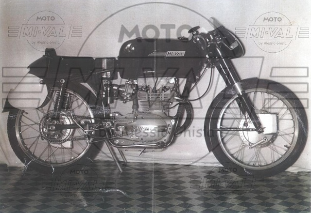
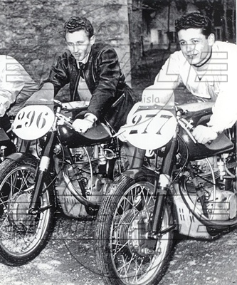

175 Bialbero - 1955
|
 |
 |
SCHEDA TECNICA
MOTORE: Monocilindrico 4 tempi, alesaggio e corsa 60 x 61 mm
Distribuzione bialbero comandata da catena a 2 valvole
Cilindrata effettiva 172,4 cc, potenza effettiva 13 CV a 7500 giri/min , rapporto di compressione 1 : 10
Velocità massima 155 km/h
Carburatore Dell'Orto SS 25
Accensione a spinterogeno
Lubrificazione forzata a carter umido
Cambio a 5 rapporti, trasmissione primaria e secondaria a catena
Frizione in bagno d'olio a dischi multipli
TELAIO A doppia culla
Forcella anteriore telescopica idraulica
Sospensione posteriore a forcellone oscillante con ammortizzatori idraulici
Freno anteriore a doppia camma e 4 ganasce Amadori, freno posteriore a tamburo centrale
Ruota anteriore: 2,50 x 19 Ruota posteriore: 2,50 x 19
Peso totale: 90 kg a secco